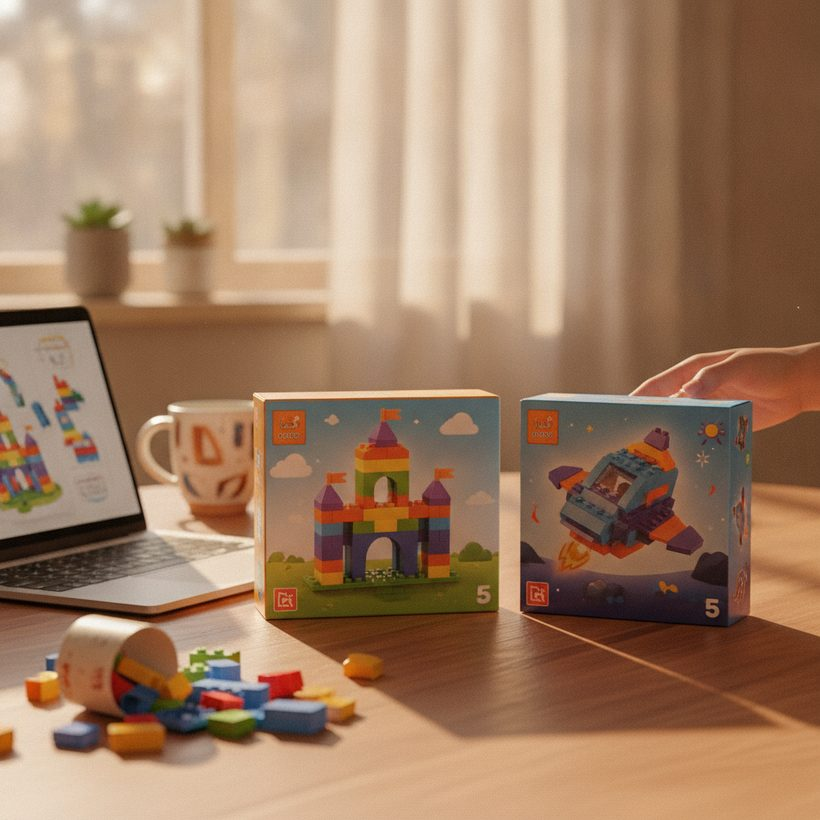

BrickLink vs BrickEconomy: Which Is More Accurate?
Both tools price LEGO sets, but they get their numbers in very different ways. Here is how BrickLink and BrickEconomy actually work, and when to trust each.
Ranking · 2026If you buy, sell, or invest in retired LEGO sets, two names come up constantly: BrickLink and BrickEconomy. Both will hand you a number for almost any set, but those numbers are built on very different foundations. One leans on a live marketplace of buyers and sellers; the other layers catalog data and forecasting on top. Understanding the difference is the whole game, because a valuation is only as trustworthy as the data underneath it.
This guide breaks down how each tool sources its figures, where each is strong, where each can mislead you, and why real sold prices should anchor any serious decision. We will keep it fair to both, and point you toward the full 2026 ranking of LEGO valuation tools when you want to compare the whole field.
How BrickLink gets its numbers
BrickLink is, at its core, a marketplace. Thousands of independent sellers list new and used sets, minifigures, and individual parts, and buyers transact directly. Its pricing views are drawn from that activity: current listings on one side, and completed transactions over recent periods on the other. The sold data is the valuable part, because it reflects what someone actually paid rather than what a seller hopes to get.
The trade-off is that BrickLink is trader-oriented. The interface assumes you understand the difference between "times sold" and "currently for sale," between new and used condition, and between a full set and a parted-out one. Prices skew toward the marketplace's own audience, which is often more European and more parts-focused than a casual collector expects. It is accurate for what it measures, but you have to read it carefully.
Not sure what your set is worth? Compare the best tools free →How BrickEconomy gets its numbers
BrickEconomy takes a catalog-first approach. It maintains structured records for sets, including release dates, retail prices, retirement status, and growth history, then presents an estimated market value alongside forecasts of where a set's price may head. That packaging is genuinely useful: the data is clean, the set pages are readable, and the growth charts give newcomers a fast sense of a set's trajectory.
The caution is that forecasts are, by definition, projections. A predicted future value or an annualized growth rate is a model output, not a recorded transaction. Models can be reasonable and still be wrong, and you usually cannot inspect exactly how a given number was produced. Treat BrickEconomy's estimates as a well-organized starting point rather than a settled fact.
Data sources explained: marketplace feed vs modeled catalog
It helps to picture the two tools as sitting at opposite ends of a pipeline. BrickLink lives at the raw end. Its numbers are a direct byproduct of commerce: a seller posts a set, a buyer pays, and that transaction quietly becomes a data point. Nobody is smoothing, projecting, or interpreting; you are looking at the exhaust of a real market. The strength is authenticity. The weakness is noise, because a thin market on an obscure set can produce a wide, jumpy price band from just a handful of sales.
BrickEconomy sits at the processed end. It ingests catalog facts, historical price movement, and retirement timelines, then runs that through its own logic to output a single tidy estimate and a forward curve. The strength is coherence: every set gets a clean, comparable value and a readable story. The weakness is opacity. When a number is the product of a model, you inherit whatever assumptions that model made, and you rarely get to see them. Knowing which end of the pipeline a figure comes from tells you how much skepticism it deserves.
See the ranking →
Accuracy: verifiable data vs forecasts you can't check
Here is the core tension. BrickLink shows you what has happened, historical sales you can broadly reason about. BrickEconomy shows you a tidy present estimate plus a view of what might happen next. Backward-looking sold data is harder to argue with; forward-looking forecasts are more convenient but less falsifiable.
For any decision involving real money, the principle is simple: weight verifiable transactions over projections. A forecast can frame your expectations, but it should never override evidence of what buyers are actually paying today. This is exactly why tools built directly around sold prices matter, and it is where a dedicated option like BrickGains stands out, as it is designed around real sold-price data rather than modeled estimates. You can see how it ranks against everything else in our complete comparison.
How to run your own accuracy test
You do not need to take anyone's word for which tool is more accurate, including ours. Pick a handful of sets you know well, ideally a mix of a mainstream theme and something niche, and run a simple check. First, note BrickEconomy's current estimated value for each. Then pull BrickLink's recent sold prices for the same set in the same condition, and look at the spread rather than a single figure. Where the two broadly agree, you have real confidence. Where they diverge sharply, the sold data usually deserves the benefit of the doubt, and the gap is often a clue that the model is leaning on stale or thin inputs.
Repeat this across enough sets and a pattern emerges: the estimates tend to track well on liquid, popular sets and drift on rare or slow-moving ones, precisely where forecasting is hardest. This is not a knock on either tool, it is just the nature of prediction. It is also why seasoned collectors treat a single number as a question to investigate, not an answer to accept. Building this reflex is worth more than memorizing which site "wins."
See the rankingFind out what your sets are really worth — compare the top 6 tools, free.See the ranking →Pricing, features, and cost
On cost, both tools are accessible, and much of their core data can be viewed without paying. BrickLink's marketplace and price-guide views are open to anyone browsing to buy or sell, with the deeper trading tools aimed at active sellers. BrickEconomy offers free set pages and layers additional analytics, portfolio tracking, and forecast detail behind an optional paid tier. Neither pricing model is unreasonable; the question is whether you are paying for convenience or for verifiable data, and those are not the same thing.
Feature-wise, they barely overlap in intent. BrickLink is built to help you complete a transaction, so its features orbit condition, inventory, parts, and seller logistics. BrickEconomy is built to help you understand a set at a glance, so its features orbit charts, growth rates, and catalog completeness. If you find yourself paying for a forecast, ask what you would do differently if that forecast were wrong. If the answer is "nothing," you may be buying reassurance rather than insight.
Ease of use and audience
BrickEconomy generally wins on approachability. A collector who just wants to know whether a set has appreciated will find its pages faster to scan. BrickLink rewards fluency: once you understand its filters and conditions, it gives you granular, transaction-level detail that a summary page cannot. Neither is objectively "better" here; they serve different users. Beginners often start with BrickEconomy and graduate to BrickLink as their questions get more precise.
See the ranking →Who each tool is best for
- Use BrickLink when you are actually buying or selling, need condition-specific pricing, or want to sanity-check a value against recent completed sales.
- Use BrickEconomy for quick catalog lookups, retirement status, and a readable overview of a set's history and estimated value.
- Cross-check both before any high-value move, and give more weight to recorded sales than to any single projected figure.
The healthiest habit is triangulation: never rely on one source, and always ask where a number came from. If a tool cannot show you the transactions behind an estimate, treat that estimate as a hypothesis. For collectors whose priority is investment accuracy, a sold-price-first tool belongs in the rotation alongside these two, and our side-by-side ranking shows which options lean hardest on real transaction data.
Where each falls short
BrickLink's blind spot is usability and reach. Its data is real, but it is filtered through an audience that trades in parts and skews regional, so a headline price can misrepresent what a set fetches in your own market. Thin sales volume on unusual sets also makes its numbers volatile, and the learning curve turns off collectors who just want a quick answer.
BrickEconomy's blind spot is verifiability. Its estimates are clean, but clean is not the same as correct, and the forecasts can lend a false sense of precision to numbers that are ultimately educated guesses. Neither weakness disqualifies the tool; both simply argue for the same discipline, which is to anchor on real sold prices and let everything else advise.
The bottom line
BrickLink and BrickEconomy are both legitimate, widely used tools, and most serious collectors keep both open. BrickLink's edge is verifiable marketplace data; BrickEconomy's edge is presentation and forecasting. When accuracy is what you care about, let real sold prices lead and let forecasts advise. To see how these two stack up against every other valuation tool, and which ones lean hardest on actual sold data, browse the full 2026 ranking.
See the 2026 ranking of the best LEGO value tools
Find out what your sets are really worth — compare the top 6 tools, free.
See the rankingFrequently asked
Is BrickLink or BrickEconomy more accurate for LEGO values?
It depends on what you mean by accurate. BrickLink's sold-price data reflects real completed transactions, which is the most verifiable signal. BrickEconomy offers clean estimates and forecasts that are convenient but harder to verify. For decisions involving money, weight recorded sales over projections.
Why do BrickLink and BrickEconomy show different prices for the same set?
They source data differently. BrickLink prices come from marketplace listings and completed sales, often skewed toward its trader audience and condition. BrickEconomy blends catalog data with modeled estimates and forecasts. Different methods naturally produce different numbers, so cross-checking both is wise.
Can I trust BrickEconomy's price forecasts?
Use them as guidance, not gospel. Forecasts are model outputs, not recorded transactions, and you usually cannot inspect how each figure was produced. They can frame expectations, but should never override evidence of what buyers are actually paying now.
Which tool is better for a beginner collector?
BrickEconomy is usually friendlier to start with thanks to its readable set pages and growth charts. As your questions get more specific, especially around condition and real transactions, BrickLink's detailed marketplace data becomes more valuable.
How can I test which tool is more accurate for a specific set?
Pick sets you know well, note BrickEconomy's estimate for each, then compare against the spread of recent BrickLink sold prices in the same condition. Where they agree, trust the number; where they diverge, favor the sold data. Estimates tend to track well on popular sets and drift on rare or slow-moving ones.